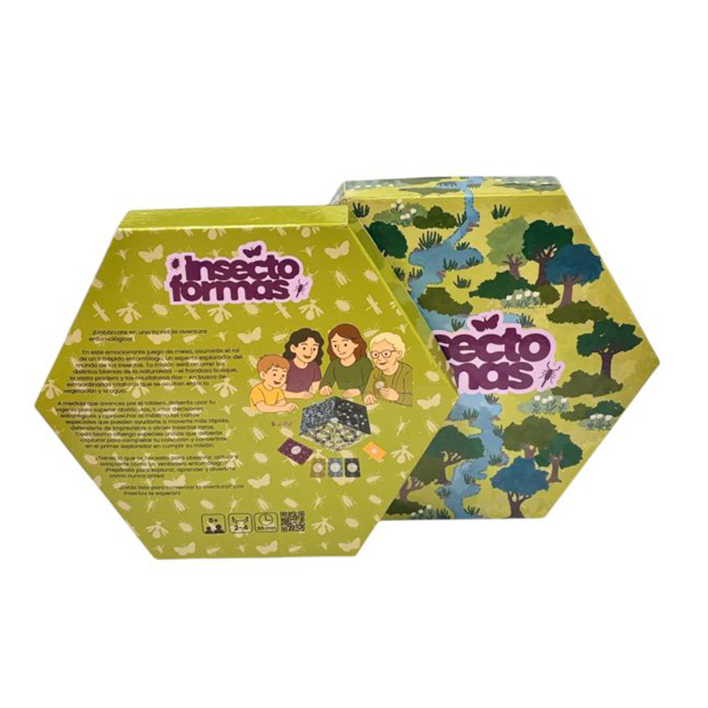
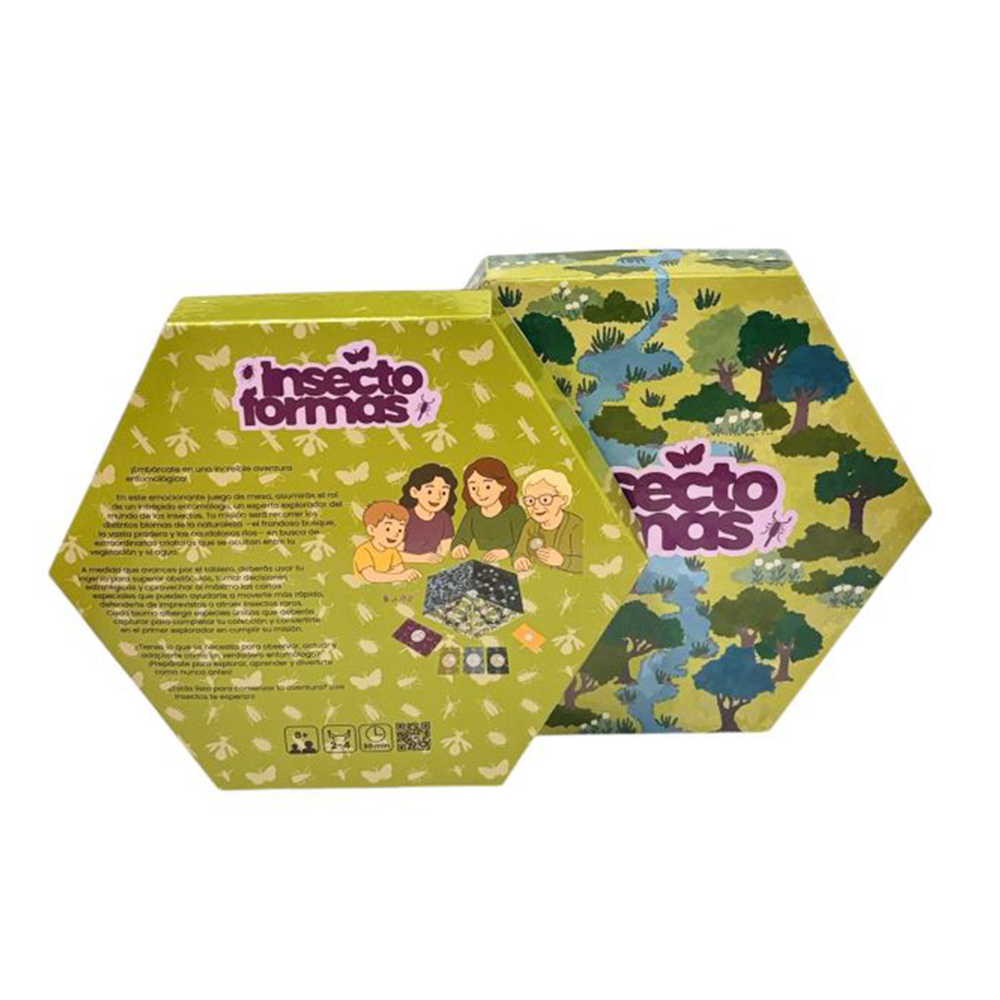

Insecto Formas
Proyecto del Taller de Diseño de Interacción 2025. “Insecto Formas” es un juego de mesa que invita a construir insectos, combinando piezas modulares y el uso de espejos para completar visualmente el cuerpo del ser creado. La propuesta explora la imaginación, la simetría y la percepción visual como experiencias lúdicas compartidas.
Ver proyecto en WikiCasiopea: Ir a la wiki
 
